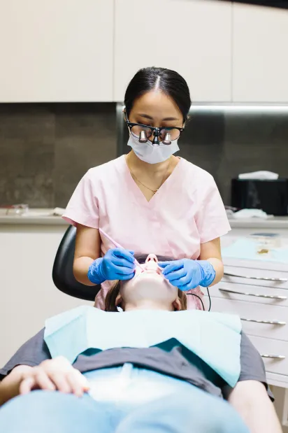

Guía completa
Implantes Dentales 2025
Todo lo que necesitas saber: proceso, duración, cuidados y precios

Un implante es un tornillo de titanio biocompatible que se coloca en el hueso mandibular o maxilar, actuando como la raíz de un diente natural. Sobre él se coloca una corona cerámica indistinguible del diente original.

La colocación se realiza con anestesia local en una sola sesión de 30-60 minutos. Tras un período de osteointegración de 2 a 4 meses, se coloca la corona definitiva. El resultado es completamente funcional y estético.

Con los cuidados adecuados, un implante puede durar toda la vida. No requiere adhesivos, no se mueve y permite comer y hablar con total normalidad, como con un diente propio.

Para recibir un implante dental es necesario cumplir unos requisitos básicos que valoraremos en la primera consulta:
Casos especiales como poco hueso disponible, bruxismo o tratamientos previos se valoran individualmente con TAC dental de precisión.
Respondemos las dudas más habituales de nuestros pacientes

"¿Duele la operación? No. Se realiza con anestesia local y los pacientes suelen sorprenderse por lo cómodo del proceso. Las molestias postoperatorias son leves y se controlan perfectamente con analgésicos estándar durante los primeros días."
"¿Cuánto dura un implante? Con una higiene adecuada y revisiones periódicas, el implante en sí dura toda la vida. La corona cerámica puede necesitar revisión o sustitución a los 15-20 años según el desgaste."
"¿Está cubierto por el seguro? La mayoría de seguros dentales en España no cubren implantes, aunque algunos planes premium sí incluyen ayuda parcial. En nuestra clínica ofrecemos financiación a 0% para que el coste no sea un obstáculo."